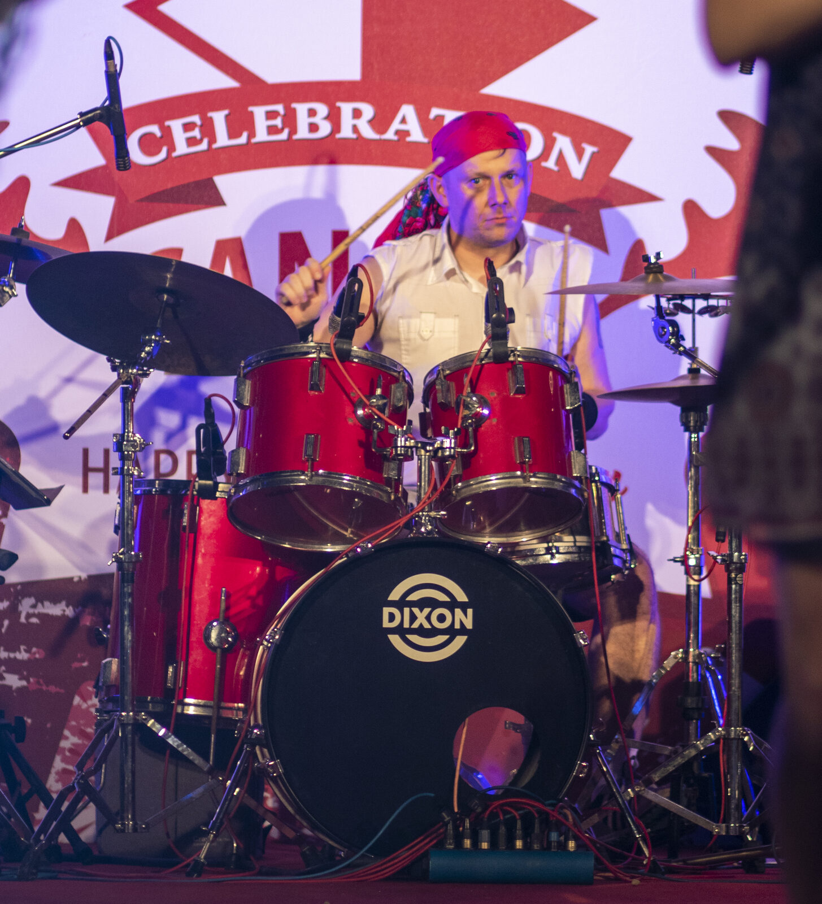
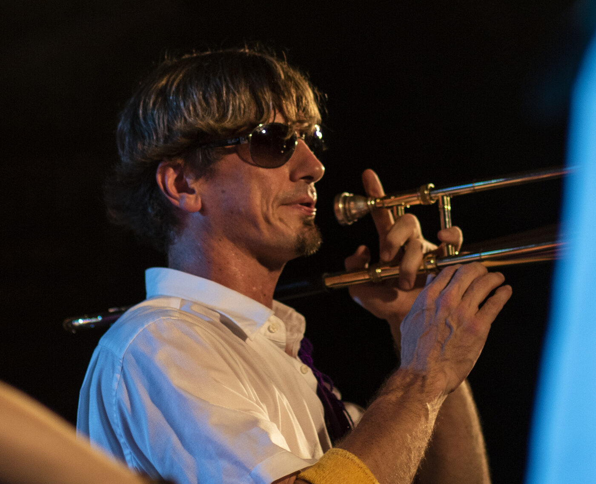

2019
June 29 · Taipei
The band has preserved video footage from its 2019 Celebration Canada appearance.
Balkazar live history
A recurring appearance at Taipei's Canada Day celebrations, with documented years and our own festival photographs.
Past appearances
Dated appearances, organizer listings, music journalism and footage from our own archive.
← All festivals
The band has preserved video footage from its 2019 Celebration Canada appearance.
Taiwan News's festival preview listed Balkazar among the live music performers.
Taipei Times named Balkazar on the organizer's invited-artist lineup.
From the archive
Celebration Canada photo archive. Photos from the band's existing collection; undated images aren't assigned a specific year.

Want Balkazar at your event? Get in touch ↗